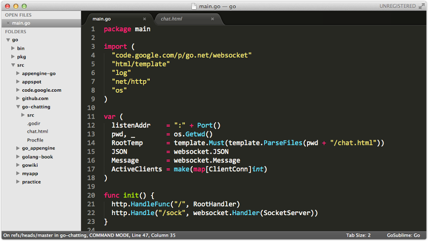
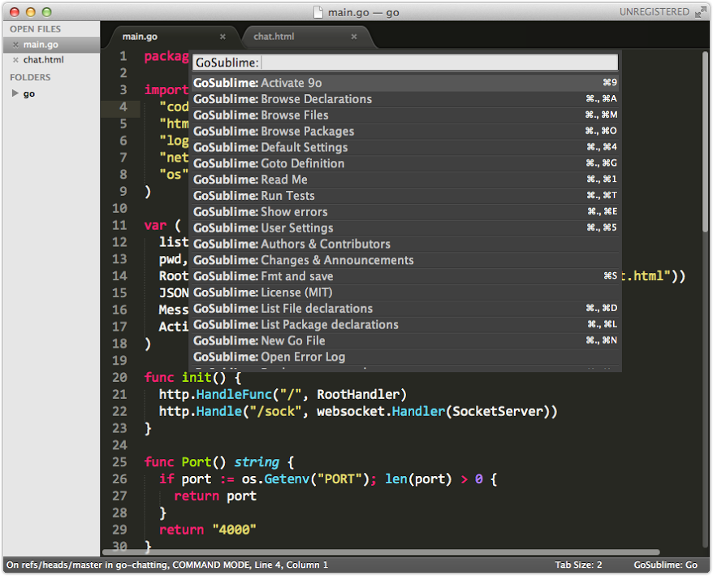

分享一下我的 Go 開發環境。
作業系統: Mac OS X 10.9
在 Mac 上要使用 Go 的最簡單方式是用 Homebrew 來安裝:
$ brew install go
安裝成功後，查看一下注意事項：
$ brew info go
go: stable 1.2 (bottled), HEAD
http://golang.org
/usr/local/Cellar/go/1.2 (3980 files, 115M) *
Poured from bottle
From: https://github.com/mxcl/homebrew/commits/master/Library/Formula/go.rb
==> Options
--cross-compile-all
Build the cross-compilers and runtime support for all supported platforms
--cross-compile-common
Build the cross-compilers and runtime support for darwin, linux and windows
--without-cgo
Build without cgo
==> Caveats
As of go 1.2, a valid GOPATH is required to use the `go get` command:
http://golang.org/doc/code.html#GOPATH
`go vet` and `go doc` are now part of the go.tools sub repo:
http://golang.org/doc/go1.2#go_tools_godoc
To get `go vet` and `go doc` run:
go get code.google.com/p/go.tools/cmd/godoc
go get code.google.com/p/go.tools/cmd/vet
Bash completion has been installed to:
/usr/local/etc/bash_completion.d
zsh completion has been installed to:
/usr/local/share/zsh/site-functions
接下來編輯 ~/.profile 設定 GOROOT 及 GOPATH 環境變數：
$ export GOROOT=`go env GOROOT`
$ export GOPATH=$HOME/src/go
$ export PATH=$PATH:$GOROOT/bin:$GOPATH/bin
GOROOT 指定系統上的 Go 的安裝位置; GOPATH 則指定開發時使用的工作區; 另外把 $GOROOT/bin 及 $GOPATH/bin 放到 PATH 裡方便取用 Go 相關工具。
Code Completion: gocode
gocode 主要提供 code completion 的功能，通常會跟程式編輯器例如 Vim, Emacs, 或是等下提到的 Sublime Text 整合在一起。gocode 本身就是用 Go 寫的，所以安裝就是透過 go get 來做:
$ go get -u github.com/nsf/gocode
編輯器: Sublime Text
Sublime Text 是新一代的程式編輯神器，大家應該都知道，我目前是用 3 beta 版，搭配 Monokai theme + Consolas 17pt 實在是非常的美。
字型設定：
{
"color_scheme": "Packages/Color Scheme - Default/Monokai.tmTheme",
"font_face": "Consolas",
"font_size": 17
}
畫面顯示效果如下：

GoSublime
目前我使用 Sublime Text 3 搭配 GoSublime。
不過由於 GoSublime 似乎讀不到 GOPATH 的值，需要在 GoSublime.sublime-settings 裡再設定一次：
{
"env": {
"GOPATH": "/Users/patrick/src/go"
},
}
按 ⌘+. 兩次可以呼叫出 GoSublime 的功能表，支援相當多的功能:

兩個我覺得還不錯用的功能:
⌘+., ⌘+g跳到變數或函數的定義處⌘+., ⌘+d列出程式的結構
API 參考: Dash
Dash 是我最喜歡用的參考文件工具，安裝了 DashDoc 候就可以直接在 Sublime Text 裡按 ctrl-h 查閱 API 的用法了。
Happy Go Coding
這樣設定完基本上就是蠻不錯的 Go 開發環境了，接下來當然就是動手多寫程式了。